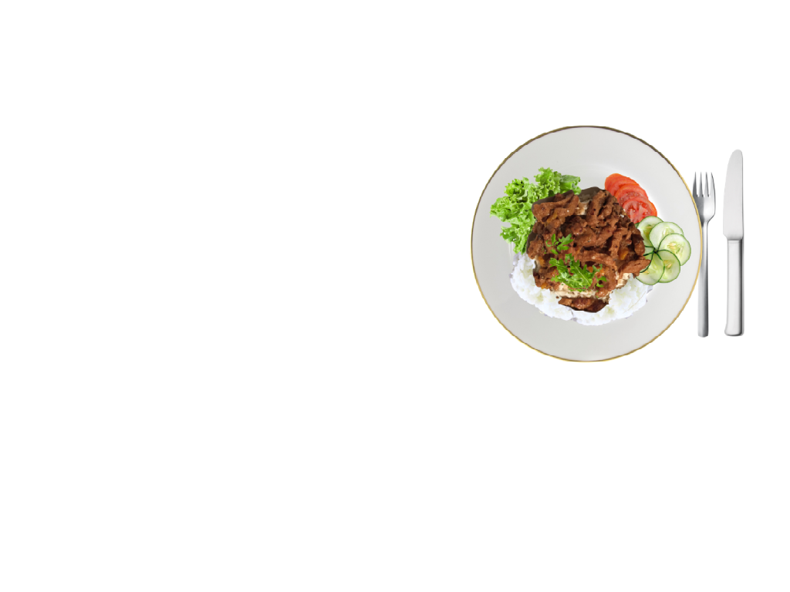

sojagryta med ris
1 paket veggi torkade sojastrips
0,5 liter grönsaksbuljong
1 rödlök
1 paprika
någon form av exempelvis currymix
1 burk kokosmjölk
salt & peppar
jasmin- eller basmatiris för 4 portioner

vad du behöver:
Noels Matsida
sojagryta med ris
Sök
Recepter
Produkter
Om sidan
Mina Recept